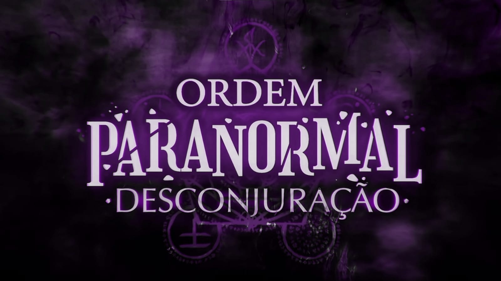
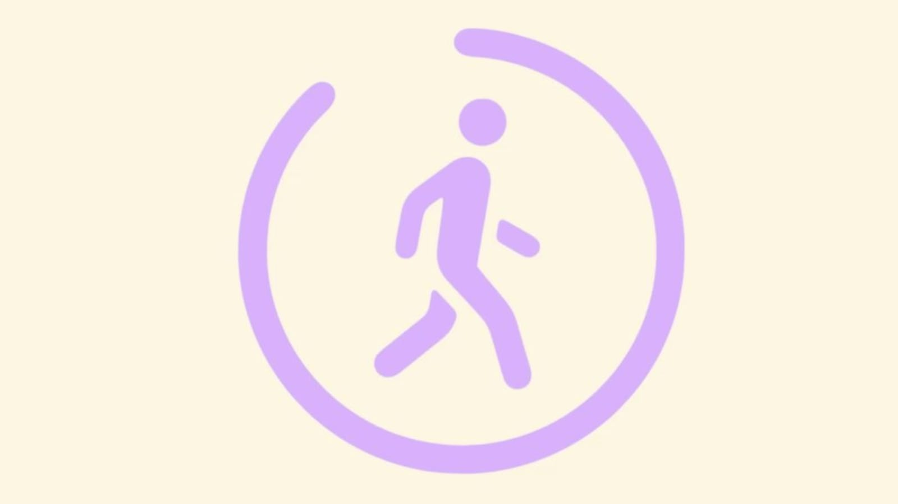

Meus projetos

OrdemFlix: Um site sobre ordem paranormal
Este projeto é uma página web que contem as temporadas e alguns episodios de ordem paranormal, que é um jogo de RPG criado pelo streamer cellbit.

Corrida: Uma Corrida de emojis Artificial
Este projeto é um jogo interativo baseado em uma corrida de emojis.

Quente ou frio: caça ao misterio.
Esse projeto é uma brincadeira de caça ao tesouro, onde um objeto é escondido e os participantes são guiados por dicas de quente ou frio para encontrá-lo. Quente indica proximidade do objeto escondido, enquanto frio indica distância.